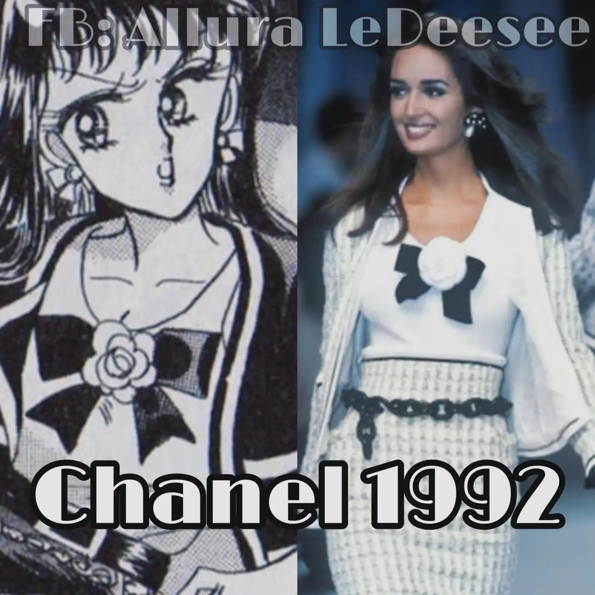
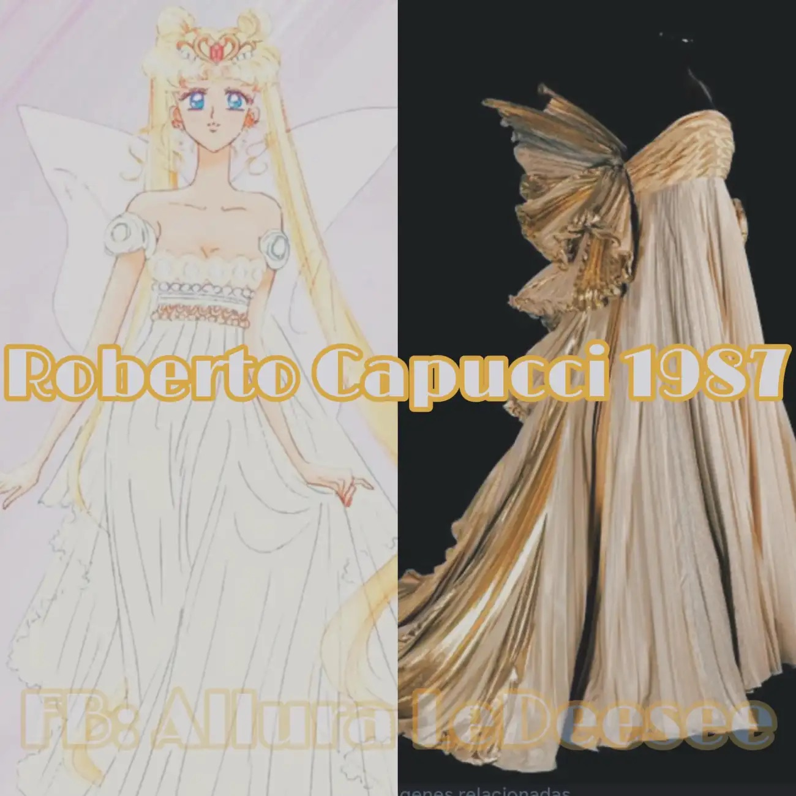
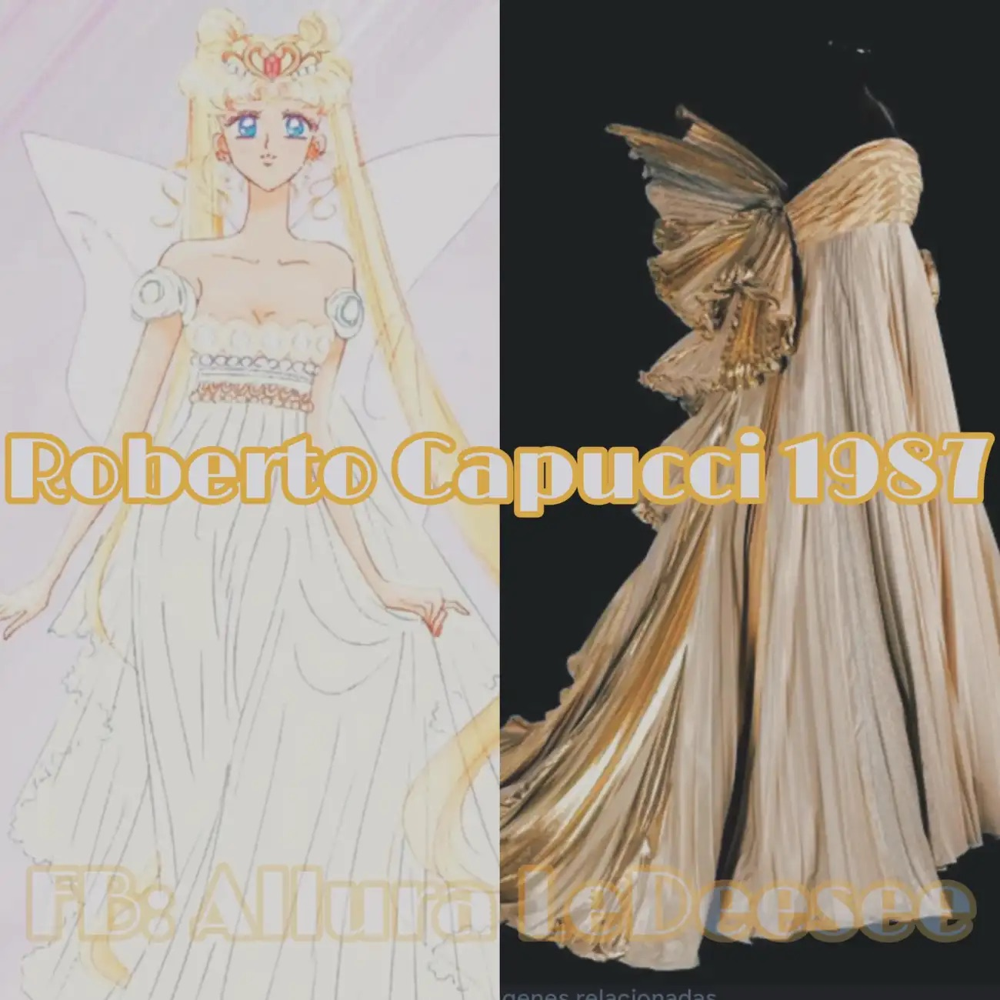
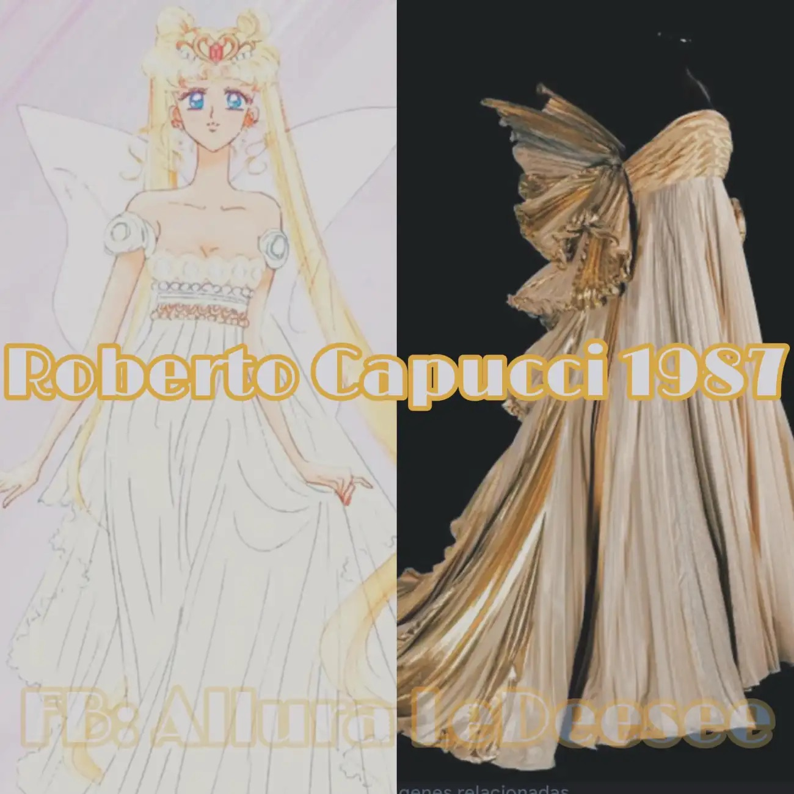

Sailor Moon facts page
Fashion Inspirations in Sailor Moon
Sailor Moon is a fictional character and the protagonist of the Sailor Moon manga and anime series. She is a teenage girl who transforms into the titular heroine to fight against evil forces and protect the Earth.
Naoko Takeuchi, the author of Sailor Moon, was a big fan of fashion and luxury brands. This definitely influenced her manga a lot and the characters she created, like her runway villains. Here are some of the fashion inspirations in Sailor Moon, including Chanel, Mugler, Dior, Versace, and more.



 



